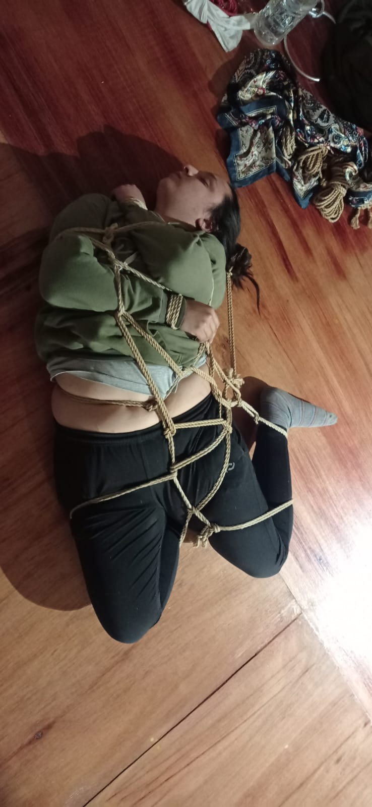
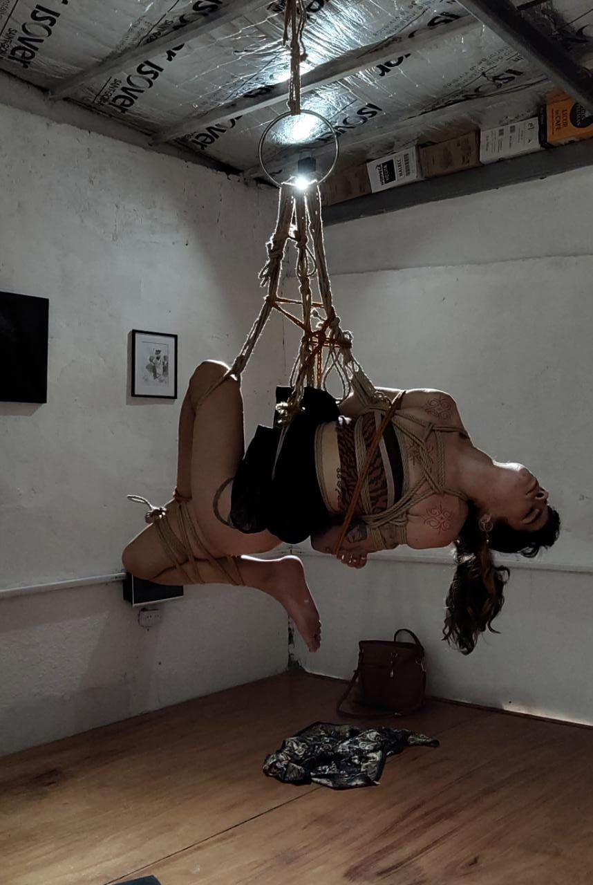
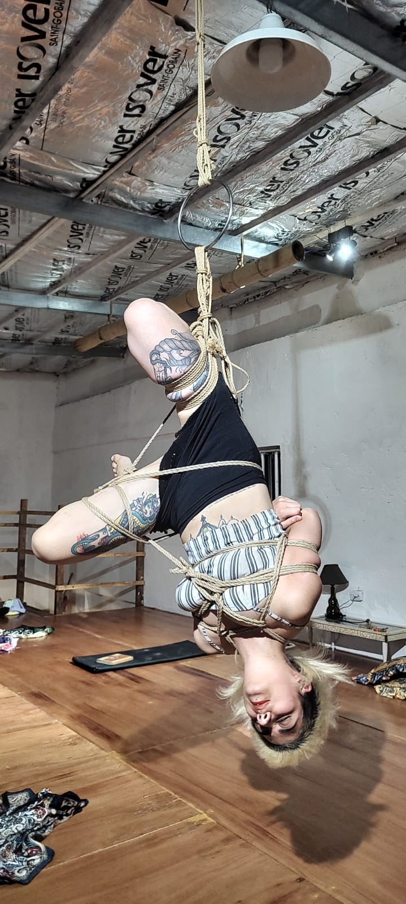
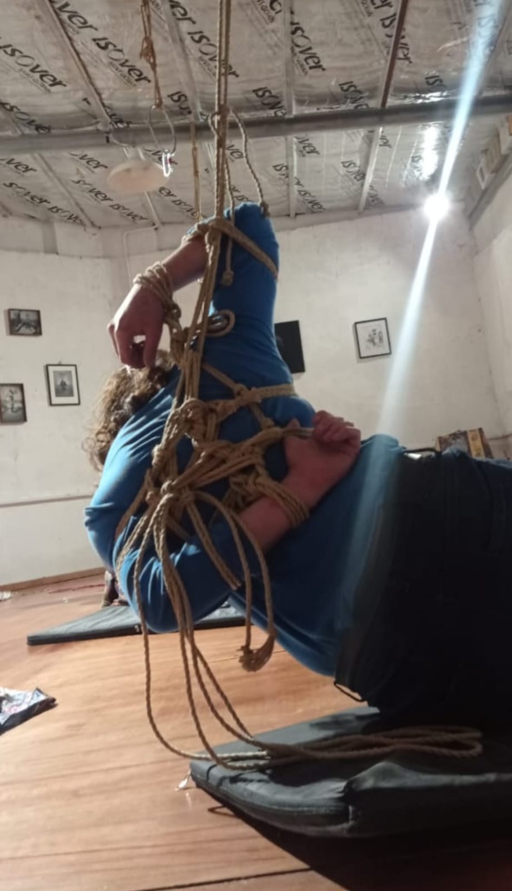

SHIBARI


La shibari (縛り‘atadura’) o kinbaku (緊縛 ‘atadura tensa’) es un estilo japonés de bondage que implica atar siguiendo ciertos principios técnicos y estéticos, y empleando cuerdas generalmente de fibras naturales.
«En pocas palabras, es la técnica de la atadura segura, sensual, dramática y erótica que está siendo elevada a una forma de arte en Japón». (Master K, The beauty of kinbaku, 2008)
Generalidades
Mientras que shibari define la acción, kinbaku se refiere al arte del encordamiento. Es importante resaltar la diferencia de concepto entre la shibari japonesa y los cordajes de orientación occidental (bondage), que solo pretenden generalmente la inmovilización del sujeto atado. El arte de la shibari no implica forzosamente la inmovilización y tiene también otros aspectos, como la calidad estética del conjunto cuerda-atamiento-sumisa o sumiso, el plano triangular formado por el maestro, la persona atada y el espectador (muy importante en la tradición japonesa) y tiene, además, muy en cuenta el efecto energético —negativo o positivo— sobre ciertos puntos del cuerpo de la persona entregada al maestro, relacionados con los meridianos energéticos del cuerpo humano según la tradicional medicina oriental
Introducción a las prácticas
Pese a hundir sus raíces en técnicas de tortura, el moderno arte de los juegos eróticos con cuerdas no es en absoluto cruel ni violento. Se trata de una práctica totalmente consensuada, con técnicas y límites definidos. Tanto el shibari como el bondage han desarrollado estéticas y técnicas propias.
Técnica
Para realizar las ataduras se suelen emplear cuerdas de 7 u 8 metros, aunque algunos emplean también puntualmente cuerdas más cortas o más largas. Generalmente se usan cuerdas de fibras naturales (cáñamo, yute, coco, arroz...). La palabra japonesa asanawa empleada a menudo por atadores japoneses hace referencia a cuerdas de fibra natural, sin hacer distinción entre cáñamo y yute.
En las ataduras japonesas se emplean habitualmente diversas figuras o patrones.
Algunas de las más habituales son:
- Ipponawa 一本縄
“Una cuerda”. Nos solemos referir a una atadura improvisada, restrictiva y con una sola cuerda.

- (Ushiro) takate kote o gote (後ろ高手小手):
Patrón frecuente empleado a menudo como base de la atadura. Captura la parte superior del torso inmovilizando los brazos generalmente tras la espalda (ushiro significa ‘detrás’) en forma de u o equis.
- Yokozuri 横吊り
Suspensión horizontal

- Futomomo 太腿
“Muslo”. Atadura de pierna para suspensión.

- Hishi:
Atadura corporal con formas diamantinas o romboidales. Es una de las formas más populares, muy extendida por ejemplo en el manga. En Occidente se ha empleado para alguna de sus variantes el término nipón karada (‘cuerpo’).

- Teppō (鉄砲):
También conocida como «atadura del rifle», sitúa los brazos siguiendo una línea diagonal.

Precauciones
La realización incorrecta de las ataduras, especialmente si las figuras incluyen suspensión total o parcial, puede provocar lesiones de diversa gravedad en nervios, tejidos o articulaciones.3 Se suelen realizar ciertas recomendaciones de seguridad:
- El roce de la cuerda sobre la piel puede provocar abrasiones si el movimiento es demasiado rápido o brusco.
- Tener al alcance de mano tijeras (preferiblemente de punta roma) permite cortar las cuerdas rápidamente en caso de emergencia.
- Establecer comunicación con la persona atada permite detectar situaciones de peligro: diferentes escuelas favorecen la comunicación verbal o la no verbal.
- Se aconseja comprobar regularmente las extremidades de la persona atada.
- Las formas de prevenir daño en nervios y articulaciones varían entre diferentes escuelas.
- Se deben tomar precauciones especiales con modelos sin experiencia, con presión sanguínea baja, problemas cardiorrespiratorios o de circulación.
Historia
Durante los siglos XV y XVII, Japón vive inmerso en una etapa de reinos feudales o daimios y guerras civiles, denominada período Sengoku, que significa literalmente ‘país en guerra’. A partir de 1603 hasta 1867 comienza el período Edo bajo el sogunato Tokugawa. Ya antes de ese período existían diversas formas, fuertemente ritualizadas, para atrapar e inmovilizar por medio de cuerdas a un samurái enemigo en el mismo campo de batalla. Posteriormente, un código punitivo de 1542 regulaba el uso de cuerdas en la tortura y apresamiento de enemigos y criminales. Existían cuatro formas básicas, que incluían la humillación y la incomodidad (hasta la tortura) para los prisioneros. Estas penas desaparecieron con el reino Tokugawa. En el período Edo (1600-1878) se desarrolló una arte marcial, llamado hojōjutsu, cuyo objetivo era atrapar y mantener retenidos a enemigos o criminales por medio de cuerdas. Se desarrollaron técnicas muy precisas para lograr este fin (a veces cada comunidad rural y cada familia de samuráis tenían las suyas); de modo que al exponer en la plaza pública al prisionero maniatado o colgado, la gente podía observar: la forma de las ligaduras y el tipo de cuerda, deducir la clase social del reo, el crimen que se le imputaba y, a veces también su edad y profesión.
Muchos expertos opinan que el hojōjutsu, una arte marcial que consiste en inmovilizar al oponente atándole, es el auténtico precursor de la shibari, y por tanto del bondage. Aunque este último término tiene una índole más occidental y que en ocasiones lleva a confundir y por lo tanto a comparar ambos términos. Durante cientos de años, la policía nipona que acabarían por ser, más adelante, los samuráis sin señor ni katana que durante el período Edo, perdieron todos sus privilegios por orden del sogunato; empleaban estas técnicas secretas (nadie que no fuera de esta posición social podía ver su ejecución) para inmovilizar a los criminales. Debían seguir tres normas inviolables al ejecutar un hojōjutsu:
- El prisionero no debía sufrir daños permanentes.
- El prisionero no debía poder escapar.
- Nadie que no perteneciese a esta clase social debía presenciar su técnica.

Aún hoy en día, la policía nipona sigue practicando sistemas de lucha como el taihojutsu, que incorporan antiguas técnicas hojōjutsu para los atamientos.
Hacia finales del período Edo aparece la primera documentación sobre la shibari propiamente dicho, en forma de imágenes donde se muestra el uso de la cuerda con fines eróticos. En el castillo de Matsumoto se pueden encontrar los primeros dibujos señalando el paso de la shibari de técnica marcial y de tortura a práctica de refinada sensualidad. La documentación sobre la shibari nipona anterior a ese momento es muy escasa, aunque se menciona en la literatura popular.
El paso definitivo a hacia lo que hoy en día conocemos como kinbaku o shibari en Occidente, se da a través de las estampas niponas, xilografías ukiyo-e, en las cuales se representaban aquellos aspectos de la vida y de la naturaleza que significaban belleza y placer. Un tipo de impresión ukiyo-e llamada «shunga» tenía contenido erótico explícito; el término «shunga» significa ‘imagen de la primavera’ donde ‘primavera’ hace alusión a un eufemismo nipón común para la actividad sexual. En el período Edo las shunga buscó expresar las costumbres sexuales de la clase mercantil en la más amplia variedad de formas posibles y, por lo tanto, representaba el amor heterosexual y homosexual, de los viejos y jóvenes y una amplia gama de fetiches. Tal variedad se debió al hecho de que la percepción de la sexualidad en Japón difería marcadamente de la del mundo occidental moderno. Se conocen xilografías del siglo xix con motivos de prisioneros atados, escenas de tortura judicial y de tortura erótica en donde el medio de privación del movimiento eran las cuerdas. Posteriormente estas imágenes llegan al kabuki con la narración de historias cotidianas en donde los villanos eran apresados, castigados y torturados y las cuerdas eran el instrumento escénico utilizado para representar la acción; hubo también un componente erótico en el kabuki y las escenas de doncellas virtuosas (papeles interpretados por onnagata) atadas eran la sensación del público.2
Esta tendencia continuó durante el período Meiji temprano en las llamadas producciones de “nuevo teatro”, donde se trataron temas aún más contemporáneos en obras representadas bajo estándares del teatro occidental, escenarios y actuaciones más espontáneas. Durante este período, específicamente en 1896, un niño de catorce años llamado Itō Hajime entró al teatro Haruki en Tokio y vio uno de estos melodramas. Así comenzaría una fascinación de por vida con el seme (dominante) y seme-e (arte que representar una escena de dominación o castigo) que cambiaría el curso del arte erótico en Japón. Hajime creció para ser Itō Seiu, reconocido como el padre de los modernos shibari y kinbaku.
Continuará...
🔙 Volver al índice de Ejercicios